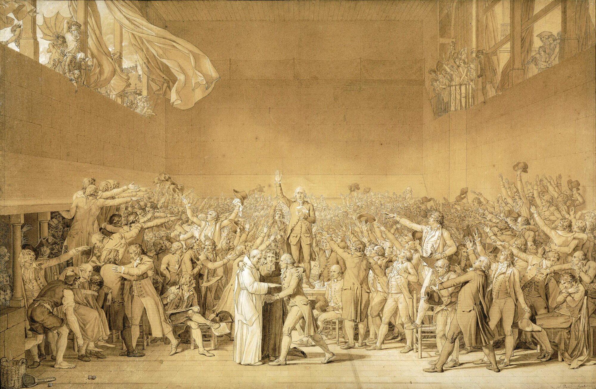

The feudal system that was a predominant system of governance in Europe’s Middle Ages was becoming obsolete. There was a growing group of rich commoners, known as the bourgeoisie, who wanted more political power. The peasants were also more educated and had more money, but still lacked many rights. In Europe, the mortality rate had dropped significantly due to better living conditions, and so the population increased a lot. France had over 25 million people, the largest country in Europe at the time, and thus faced food shortages. Also, the many wars of the 1700s—especially France funding the American Revolution—required the monarchy to charge more taxes.
The monarchy wanted to raise taxes on the privileged classes (who previously payed little to no taxes), however they didn’t want to take responsibility for this, however, and so they called the Estates-General to decide. It was an assembly that hadn’t met in over 150 years, representing the three “estates”: the first estate, the clergy (Church ministers, etc.), the second estate, the nobility, aristocracy, and third estate, the general population (everyone else). The Estates-General met in May 1789 to discuss these issues.
Each estate received one vote, however, so the upper classes (estates one and two) could easily outvote the third estate. Thus, the third estate created their own assembly, which they called the National Assembly. They initially met in a meeting hall, but the government locked the doors, so they were forced to move to an indoor tennis court. There, in the "Tennis Court Oath," they swore to persist until France had a new constitution. Trying to stop this to some extent, Louis XVI asked the nobles and clergy to join this new National Assembly. This became the new legislative body.
The tennis court oath